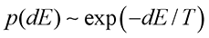
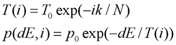

Carpalx はキーボード配列を最適化することで労力を減らし、手の負担を激減させる配列を作るプロジェクトです！


 完成した配列をダウンロードしてもいいし、自分でこのコードを使って新配列の探求へ挑むのもオツでしょう。
完成した配列をダウンロードしてもいいし、自分でこのコードを使って新配列の探求へ挑むのもオツでしょう。
 X11 用定義、あります！ Perry Thompson 氏が xkeyboard-config と kbd に Carpalx の配列を含めるパッチを送ってくれました。また、Carpalx の配列の X11 設定を提供してくれた Sven Hallberg 氏に感謝。Richard Gomes 氏には KDE/Gnome ユーザ向けのアーカイブを提供頂きました。
X11 用定義、あります！ Perry Thompson 氏が xkeyboard-config と kbd に Carpalx の配列を含めるパッチを送ってくれました。また、Carpalx の配列の X11 設定を提供してくれた Sven Hallberg 氏に感謝。Richard Gomes 氏には KDE/Gnome ユーザ向けのアーカイブを提供頂きました。
 好きな子には QWKRFY 配列か、ガチに最適化された QGMLWY 配列を勧めちゃおう。
好きな子には QWKRFY 配列か、ガチに最適化された QGMLWY 配列を勧めちゃおう。
 逆にムカつく奴にゃ TNWMLC 配列、これだね。ファッションになってる唯一の配列だし。
逆にムカつく奴にゃ TNWMLC 配列、これだね。ファッションになってる唯一の配列だし。
なんかアイデアあったら教えてくれよな。
≪訳注：メールアドレスは原文著者のもの。連絡するなら英語でね。≫
2016/08/16 — Carpalx で作られた配列をもとにしたフィリピン語用のエルゴノミクスキーボード配列が、国際学会 AHFE2016 で発表されました。
2016/04/18 — Perry Thompson 氏のおかげで、Carpalx の配列が freedesktop (xkeyboard-config パッケージ) と kbd に含まれるようになります。
2014/09/09 — De Correspondent 社と共同で、オランダ語用の新しい配列 De Correspondent を作りました。
2014/05/16 — Norman 配列の評価値を追加しました。この配列は 26 キー中の 14 キーを入れ替えて Colemak 同等の統計的性能を持ちます。詳細な統計データもあります。
2014/02/12 — abKey 配列の評価値を追加しました。ただしエルゴノミクス的側面の評価を試みてはいません。詳細な統計データもあります。
Simulated Annealing
Stochastic Optimization
Stochastic methods are used when it is very difficult, or impossible, to analytically (or deterministically) find the "best solution" to a problem. These kinds of problems are called np-complete (or np-hard) — you must examine all solutions in order to be assured of having found the best solution.
Identifying all potential solutions to a problem is not practical, except for the simplest problems. If you consider something like a keyboard layout for a keyboard with only 26 keys, it quickly becomes apparent that exploring all potential layouts (26! = 4x1026) is not feasible. However, the problem is made tractable by the fact that given two layouts you can determine which of the two is better. Moreover, if you think about it a little bit you can probably come up with some kind of number which quantifies the fitness of a given layout. In your search for the best layout, you would examine a variety of layouts and consider only those that had the best fitness.
The 'stochastic' part of the optimization represents the use of random numbers in the process of finding the best layout. Randomness is used to generate new layouts based on the last best solution. Randomness is also used to determine whether a candidate solution is to be accepted (read below). The optimization is therefore not deterministic (it doesn't always give you the same solution, as long as the seed to the random number generator is different).
Usually multiple runs of the simulation are necessary to explore the family of solutions to identify the best one because the phase space of solutions is generally complicated and many local minima exist.
Simulated Annealing
Simulated annealing is one of many types of stochastic optimization algorithms. Because simulated annealing has its roots in physics, the quantity that measures a solution's fitness is frequently refered to as the energy. The algorithm's role is to therefore find the solution for which the energy is minimum. The process of finding this solution begins with starting with some initial guess, which is frequently a random state.
For example, you would start with a keyboard layout on which the keys are randomly organized. Since each potential solution has an associated energy, you compute the energy (E0) and set this value aside. Next, you adjust the solution slightly to obtain a marginally different solution. The size of this adjustment is cruicial. If the step is too small, it make take forever to move to a significantly different state. If the step is too large, you risk jumping about the solution space so quickly that you will not converge to a solution. In the case of the keyboard, a reasonable step from one solution to another is a single or double keys swap. Once the new solution has been derived, you compute its energy (E1).
Now that you have E0 and E1 is where things get interesting. Let dE = E1 - E0 (I am using dE loosely here - it's not a differential quantity but just a difference). You might suppose that if dE < 0 then you should value the new solution over the old one, since its energy is lower. You'd be right - in this case, simulated annealing transitions to the new solution and continues from there. Let's skip over the dE = 0 case for now. What about when dE > 0? In this case, the new solution is less desirable than the old one, since its energy is higher. Do we discard the new solution? Let's consider what would happen if we did.
If all transitions with dE > 0 are rejected, the algorithm will be greedy and descend towards the lowest-energy solution in the vicinity of the current state. If the step from one solution to another is small, then a minimum energy state will be found. However, this may be a local minimum instead of a global one. If all paths from the local minimum to the global minimum involve an increase in energy (imagine the local minimum being a trough), these paths will never be explored. To mitigate this, and this is where the "stochastic" part of simulated annealing comes into play, the algorithm probabilistically accepts transitions associated with dE > 0 according to the following probability

where dE is the energy difference and T is a parameter that is interpreted as a temperature. The basis for this interpretation originates from the original motivation for the form of of the transition probability.
Given a candidate transition and dE > 0, the algorithm samples a
uniformly distributed random number r in the range [0,1) and if r The role of the parameter T is very important in the probability
equation. This parameter is continuously adjusted during the
simulation (typically monotonically decreased). The manner in which
this parameter is adjusted is called the cooling schedule, again with
the interpration of T as a temperature. Initially, T is large thereby
allowing transitions with a large dE to be accepted. As the simulation
progresses, T is made smaller, thereby reducing the size of excursion
in to higher energy solutions. Towards the end of the simulation, T is
very small and transitions with only very slight increases in E are
allowed.
In carpalx, T is cooled exponentially as a function of the
iteration, i.

The exponential form of T(i) has nothing to do with the exponential
form of the transition probability. It's just a cooling schedule that
I adapted, admittedly without testing any other form.
The effect of the cooling schedule is to allow the algorithm
freedom of movement throughout the solution space at first (large T),
then progressively converge to a solution with a minimum (medium T)
and converge to a minimum (small T). The optimization simulation is typically run
many times, each time with a different starting state.
Choosing values for p0, T0, k
and N should be done carefully. The possible range of values for E
must be anticipated and T will need to be scaled appropriately to
produce useful probability values.
For carpalx, the typing effort ranges from 9 (QWERTY, mod_01) to
about 4.5-5 (optimized, mod_01). Consequently, I have chosen the
parameters as follows
T0 scales the temperature so that at maximum energy, E/T
is approximately 1. With a value of k=10, the temperature drops by 1/e
for every 1/10th of the simulation. Initially, the temperature is
T(i=0) = 10. At i=1000, (1/10th of the simulation), T(1000)=10/e. At
i=2000, (2/10th of the simulation), T(2000)=10/e2, and so
on. At the end of the simulation, T(end) = 10/e10 =
4.5x10-4. If you want the temperature to drop faster, use a
larger value of k. To start with a cooler system, set a lower T0.
For all simulations, I've used
Metropolis,N., A. Rosenbluth, M. Rosenbluth, A. Teller, E. Teller,
"Equation of State Calculations by Fast Computing Machines",
J. Chem. Phys.,21, 6, 1087-1092, 1953.
Kirkpatrick, S., C. D. Gelatt Jr., M. P. Vecchi, "Optimization by
Simulated Annealing",Science, 220, 4598, 671-680, 1983.
Cerny, V., "Thermodynamical Approach to the Traveling Salesman
Problem: An Efficient Simulation Algorithm", J. Opt. Theory Appl., 45,
1, 41-51, 1985
Metropolis,
Monte Carlo and the MANIAC.
Parameter Values

References
The canonical reference on Monte Carlo simulations.
The canonical reference for simulated annealing.
Application of simulated annealing to traveling salesman problem.
Fun article.